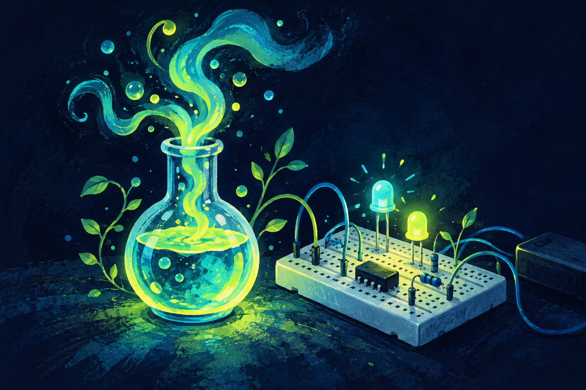

A little space to experiment
Cool things brewing.
Experiments in code, automation, and whatever else gets interesting. More soon.

A little space to experiment
Experiments in code, automation, and whatever else gets interesting. More soon.
